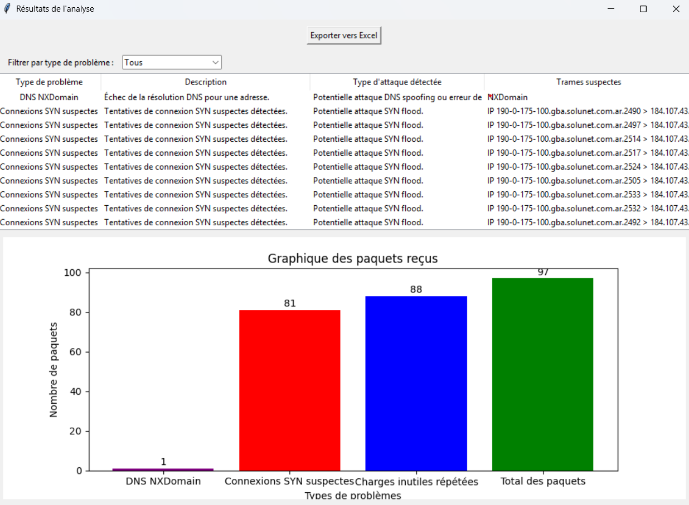

Mes Projets Personnels
TCP Dump Analyzer
Outil d'analyse réseau
Un script conçu pour parser et analyser des captures de paquets réseau (fichiers .pcap ou sorties de tcpdump). L'objectif est d'extraire des informations clés, d'identifier des flux de communication, de repérer des anomalies ou de générer des statistiques sur le trafic (ex: protocoles les plus utilisés, adresses IP sources/destinations).
Système de Verrouillage Logiciel (CryptoLense)
Intégration d'un système de licence
Implémentation d'un système de gestion de licences pour une application logicielle. Ce projet intègre l'API de CryptoLense pour permettre au logiciel de vérifier la validité d'une clé d'activation fournie par l'utilisateur. Cela empêche l'utilisation non autorisée et permet de gérer différentes versions du logiciel (essai, premium, etc.).